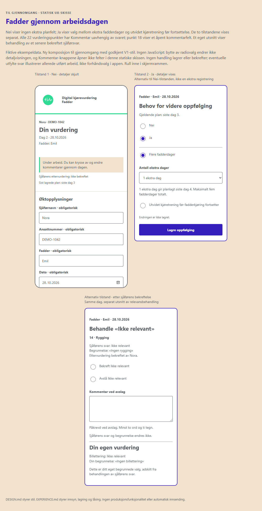
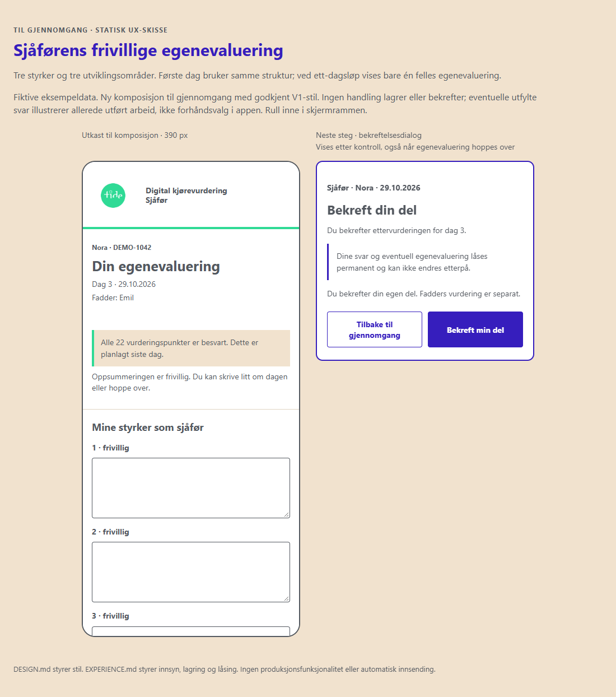
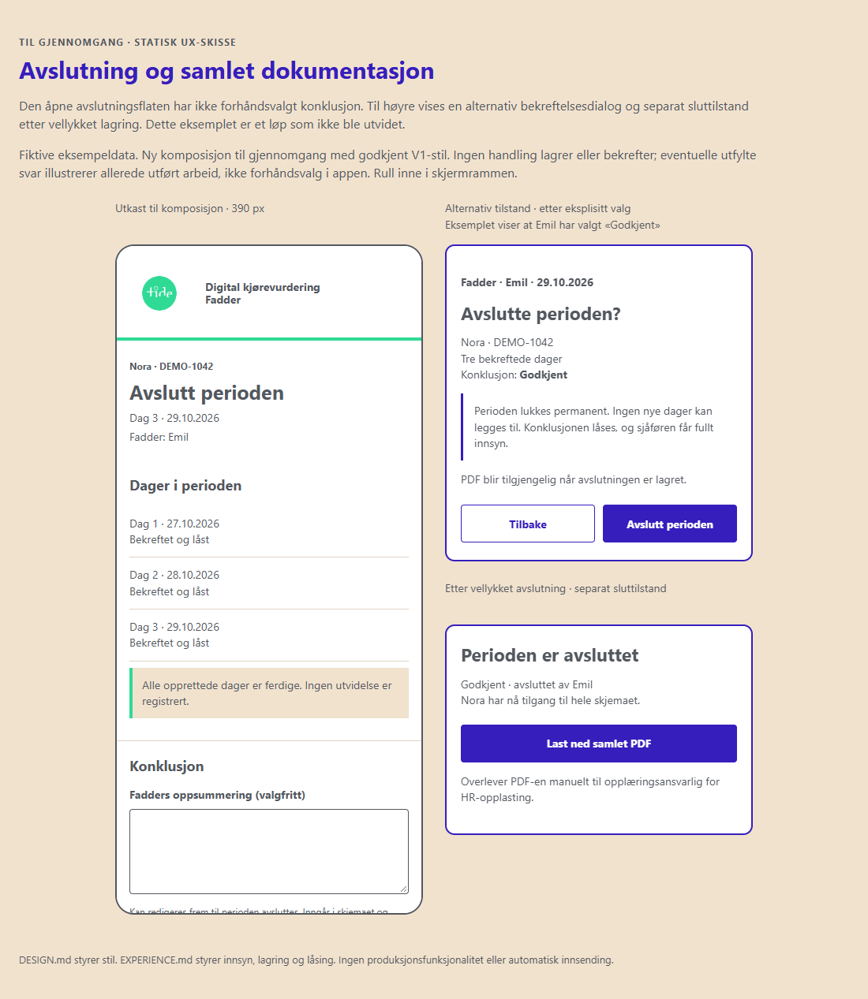

Nye komposisjoner med godkjent visuelt uttrykk. Alle personopplysninger og registreringer er fiktive.
Valgt matrise med fast overskriftsrad og tydelig hjelp.

Øktopplysninger, vurdering underveis, planlegging og separat relevansbehandling.

Frivillig refleksjon og egen bekreftelse med låsevarsel.

Samlet konklusjon: tekst først, deretter Godkjent eller Oppfølgingsbehov.
To sider med fiktivt tredagersløp: liggende progresjonsmatrise og stående kommentarer/signaturfelt. Åpne forhåndsvisning eller faktisk PDF.
22 korte tekster uten underoverskrifter, felles for sjåfør og fadder. Alle 22 tekster er godkjent.